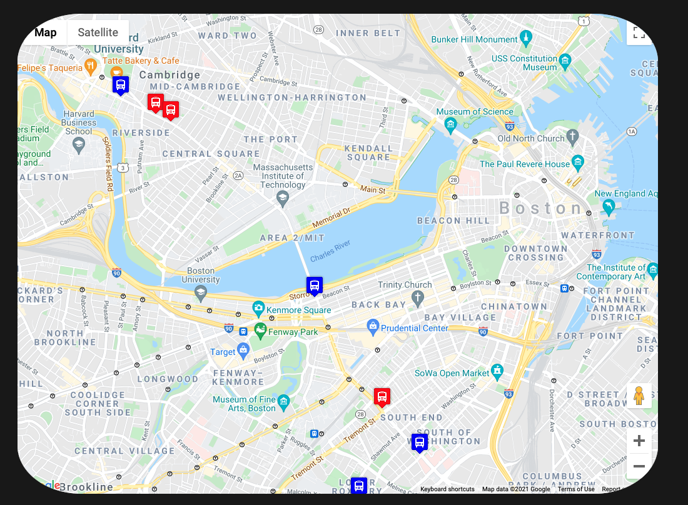

-

PacMen-Factory
This project allows the user to add multiple PacMan images to the webpage. To add a PacMan image press the "Add PacMan" button. A PacMan image will be added at a random position and velocity on the page. To make the PacMen move, press "Move PacMan" button.
Play Go To GitHub Repo -

Real-Time-Bus-Tracker
This code has the ability to display real time bus tracking data from Massachusetts Bay Transportation Authority. In order to do this, API keys were created to use Google Maps and MBTA data. There are two colors of bus icons, each representing opposite directions of travel. Launch the code and the buses' location will update every 15 seconds.
Launch Go To GitHub Repo -

Eyes-Tracking-Cursor
This monster is interactive, once the page is loaded it's eyes will follow the user's cursor
Play Go To GitHub Repo